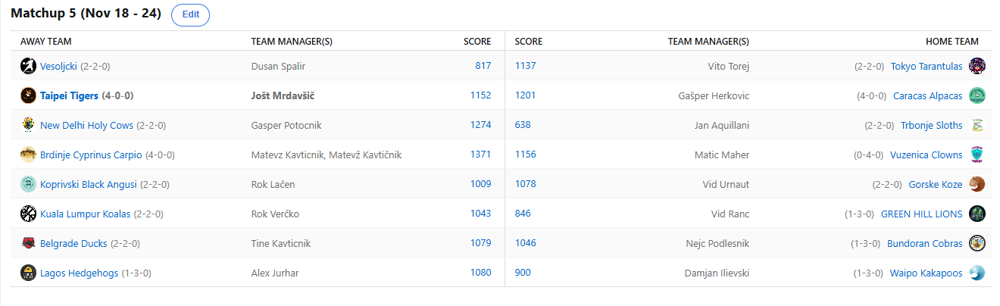

SEZONA 24/25
- Pravila in sistem tekmovanja
- Matchup1 (Oct 22 - Oct 27)
- Matchup2 (Oct 28 - Nov 3)
- Matchup3 (Nov 4 - Nov 10)
- Matchup4 (Nov 11 - Nov 17)
- Matchup5 (Nov 18 - Nov 24)
- Matchup6 (Nov 25 - Dec 1)
- Matchup7 (Dec 2 - Dec 8)
- Matchup8 (Dec 9 - Dec 15)
- Matchup9 (Dec 16 - Dec 22)
- Matchup10 (Dec 23 - Jan 29)
- Matchup11 (Dec 30 - Jan 5)
- Matchup12 (Jan 6 - Jan 12)
- Matchup13 (Jan 13 - Jan 19)
- Matchup14 (Jan 20 - Feb 26)
- Matchup15 (Jan 27 - Feb 2)
- Play-in (Feb 3 - Feb 23)
- Playoff 1 (Feb 24 - Mar 9)
- Playoff 2 (Mar 10 - Mar 23)
- Playoff 3 (Mar 24 - Apr 6)
2024/25 - Fantasy Koroška - sezona 8
MATCHUP 5 (Nov 18 - Nov 24)
Poročilo kroga
Tretjina rednega dela je za nami, že imamo precej dobro idejo katera moštva kotirajo visoko in kdo je ponovno tu za okras.
Tokrat sicer morebitni popravki ne bodo vplivali odločilno na končne rezultate, je pa ESPN vseeno izučilo in update traja dlje … just in case.
V napovedanem obračunu tedna je krajši konec potegnil Jole. Nekaj načetih kolen in kombinacija Knecht + Poeltl je bila namreč dovolj za prvi letošnji poraz.
Gašper »obupen teden« Herkovič je namreč kljub temu slavil zmago in tako ostaja neporažen tudi po 5 tednih. Ko bi vsaj gdč. Zinka dala obliž na rane,
pa tudi ni sodelovala z LM-om. Ali lahko Gašper v back-to-back tednih dobi obračun neporaženčkov in zapre kljunček Matevžu?
Največji ljubitelj nove tipke, ki ti postavo naredi za cel teden naprej, Dušan Špalir in njegovi Vesoljčki žal niso bilo kos čudnemu razporedu in tudi podaljški Miamija
v eni izmed redkih tekem niso bilo dovolj, da bi Dule ostal konkurenčen.
Prvič letos je nekdo pobral maksimalen izkupiček 16 prediction točk za zmago v matchupu.
Kakopak je to pomenilo tudi zmago njegovega moštva, Vito je namreč edini verjel v svoje Tarantele v tem matchupu.
Toda čeprav je na vrhu razpredelnice še vseeno nima na vidiku Zionovega povratka. Ni ga stolpa, ki bi bil dovolj visok za kaj takega.
638. šeststo osemintrideset. Ob pogledu na to številko bi si namreč mislili, da gledamo scoreboard v sredo. Ali pa da ESPN ponovno šteka.
No, tokrat ni bilo nič od naštetega, pač pa je bil na sceni Jan Kupljen s svojimi Lenivci.
Nekoliko preveč resno so vzeli svoje ime in ta teden niso naredili absolutno nič koristnega.
Gre namreč za zgodovinsko drugo-najslabši score v zgodovini (572 Ducks). Svete Krave so tale walkover sprejele z veseljem in Geps se z zelo solidnih 3-2
giblje tako visoko, kot ga še nikoli nismo videli. Bo nadaljeval tako tudi v prihodnje in ali bo Kups še drugi vrsti goveda, Koprivskim Angusom, podaril novo zmago?
Zelo bi jo namreč potrebovali, po težkem porazu, ki so ga doživeli ta teden. Kaj Vokija bolj boli, da ni bil zraven v kazinoju ali da je izgubil proti childhood rivalu Vidu Urnautu?
Upajmo, da se je za vikend vsaj nasankal v zadostnih količinah in s tem sprostil svoje napete živce.
Na drugi strani se je child-predator Giddey končno prebudil in s svojim do zdaj nauspešnejšim tednom prinesel Urnautu že tretjo zmago.
Je pa res, da smo Koz v recimo prvi polovici rednega dela vedno vajeni pri vrhu, pa se potem pod pritiskom zlomijo in klavrno zaključijo sezono.
Ali lahko eden izmed velecenjenih MalcaBoysov letos končno poseže višje?
Nadaljujemo s stvarmi, ki se vedno znova dogajajo … Maher in njegovo zadnje mesto sta res kot Xavi in Iniesta, enostavno neločljiva in vedno omenjena skupaj.
Spomnimo se tiste Kuzmanove izjave od lani, ko je za Pistonse, ki so bili na 20+ tekmah losing streaka dejal »at this point,
just dont be that team to lose against them« …. In tako tudi mi čakamo »that team«, ki bo Maherju dalo možnost okusiti zmago….
Da jebe preusmerimo proti njim kakopak. Sicer so tokrat Klovni precej drago prodali svojo kožo proti neporaženim Krapom in tako smo za nekaj časa celo imeli mir
pred contentkingom Matevžom, ki mu je očitno »delala prpa« vsaj za trenutek. Vendarle so stvari proti koncu postavili na svoje mesto in pustili prazen prostor v stolpcu porazov.
Če je bil ta teden za Matona največji izziv najti, kje se zmanjša vložek na spin, pa je zdaj pred njim pravi preizkus. V zaporednih tednih bo namreč moral pokazati
svoje kvalitete, ko ga čakata 1. in 3. uvrščena Herko in Jole.
Osmoljenec prejšnjega tedna, Rok Verčko, si tokrat ni rabil gristi nohtov, saj se je rutinirano sprehodil do nove zmage. Glede na vse možne poškodbe, ko je za trenutek edina
slovenska beseda, according to ChatGPT, ki vsebuje več O-jev kot moštvo Koal bila »OHOHOOOOOOO«, je vsekakor score 3-2 precej zavidljiv dosežek in Rok bo
še resno mešal štrene, ko se z »dopusta« vrnejo nekateri prvokategorniki. Levčki še naprej ne znajo rjoveti. Če bi bil prenos njihove tekme na ESPN-u,
bi namreč med kako minuto odmora dobili tisto »0-4 SINCE BARKING AT THE LEAGUE MANAGER« … Kaj se iz tega nauči naš novinec pa je odvisno od njega.
Bo zbral moči in na zmagovalna pota stopil proti še enemu OG-ju, Aleksu?
Njegovi Ježki so zdaj sicer v kar dobrem momentumu, zmaga proti Kakapojem, ki se sicer še vedno poskušajo rešiti poškodb in če ne bi bilo stat-correctionov,
bi jih grajali podobno kot Klovne, je namreč Aleksa vrnila na zmagovite tirnice. Edina dobra lastnost, da se lestvica ne posodobi
že enkrat je ta, da lahko uživamo ob gledanju Hedgehogsov v bottom4. No, update lestvice pa ne bo rešil Dilija,
ki je s 4. porazom trdno prikovan tik nad Maherja. Banchera in Murrayja potrebuje bolj kot Sahara vodo, potem pa lahko poskuša v finišu sezone priti višje in se
izogniti gajbi na pikniku.
V obračunu še dveh gajba kandidatov ki nam je še kot zadnji ostal za obdelavo, pa je zmago zabeležil Tine.
Očitno smo se vendarle motili, ko smo mu množično pripisovali eno izmed najslabših 2 mest in s tem neudeležbo v playoffih.
Tinki Binki aka ruletaMajster je zmagal že 3. in se rutinirano zadržuje v sredini lestvice.
Tokratna stranka pa so bile Bundoranske Belouške. Embiidova kolena še naprej niso zmožna nositi bremena te nekot strahvzbujajoče franšize in kakšno,
če sploh, rešitev pripravlja aktualni prvak? Bo morda postavil nov mejnih in šel od titule do gajbe v dveh zaporednih sezona?
Časa je še dovolj in zaenkrat v grlo teče zgolj Jabolčni tat, ne pa tudi voda.
Kot napoved kroga smo že povedali, da nas čaka obračun neporaženih moštev, Carpio in Alpacas in to je definitivno the one to watch v 6. tednu.
Izmed ostalih bomo spremljali še, ali lahko Jole v bivšem Janeškem ElClassicu pride nazaj na zmagovalna pota in pa ali je Maher že pripravljen na prvo zmago?
Ne pozabite na predictione in veliko sreče!